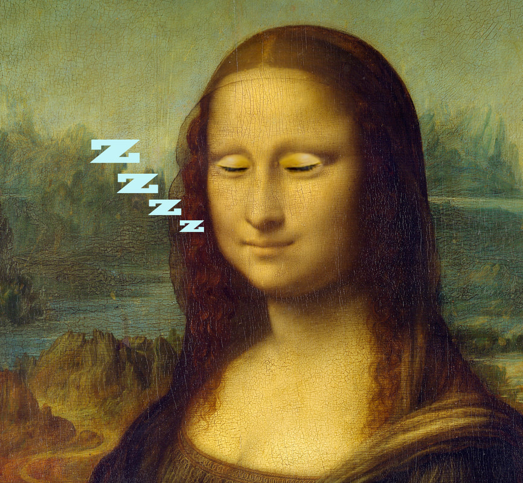

Leonardo Da Vinci Sleep Pattern
Anyway, extraordinary minds such as Leonardo’s often have a quirky lifestyle behind them — and Da Vinci’s bizarre lifestyle choice was how he slept.
Da Vinci slept for a total of two hours per day, in which he took 20 minute naps roughly every 4 hours, known as the Uberman cycle. and you might say :
“This is ridiculous! 2 hours of sleep? That’s irreversible damage to your body and mind on an unimaginable scale…”
And you’re right, it probably is, so don’t try this (sleep cycle) at home.